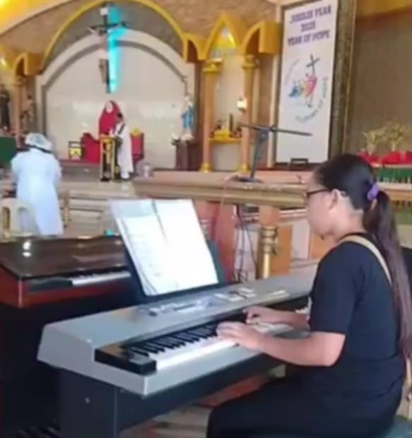

This page provides a deeper look into my personal background, academic pursuits, and my roles within my community and church.
🎓 Personal & Academic Journey
- Name: Krystelle M. Liray
- Birthday: September 13, 2007
- Age: 18 years old
- Status: Single
- Address: Purok Libudon Barangay Bobon, Mati City Davao Oriental
- Education: Currently a First-Year College Student.
- Institution: Davao Oriental International Technology (DOIT).
- Course: Bachelor of Industrial Technology Major in Computer and Information Technology.
- Section: CIT-1B
👨👩👧👧 My Family
I am blessed with a loving and supportive family:
- Mother: Glenda Maumbas Liray
- Father: Rudy Kaparaz Liray Jr.
- Older Sister: Kyla Joy Maumbas Liray
- Twin Sister: Karylle Maumbas Liray

🎹 Church & Music Ministry
My musical gifts are dedicated to serving the church. I regularly lead the music during services:
- Young Organist & Pianist: I play the organ and piano at GKK Libudon.
👥 Parish Youth Ministry (PYM) Leadership
I am actively involved in leading and organizing youth activities within our community and parish.
- PYM President: I serve as the President of the Parish Youth Ministry at the Sacred Heart of Jesus Parish Don Bosco Training Center (Parochial Church).
- Zone 3 Treasurer: I also hold the position of Treasurer for the Parish Youth Ministry of Zone 3.